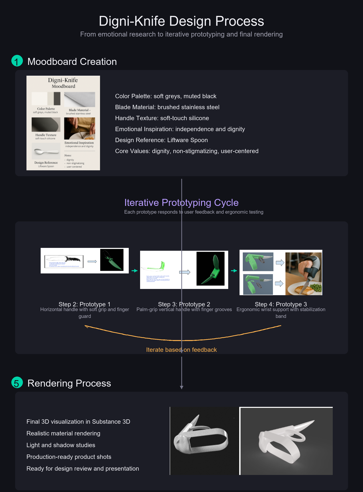

Accessibility & Novel Human-Computer Interaction
My research asks how interfaces can adapt to human variation rather than expecting people to adapt to interfaces. It spans two directions: accessibility — making systems usable for people with motor, sensory or communicative differences — and novel interaction, where new input signals such as touch contact area reveal things conventional metrics miss.
Accessibility
Treating accessibility as a design philosophy rather than a compliance checkbox — from WCAG 2.1 AA and AODA standards through to assistive product design.
Novel Interaction
Investigating under-used input signals, such as contact-area dynamics on capacitive screens, as indicators of motor control differences.
Technology & Ageing
Examining how communication technologies affect social isolation among older adults, and where the evidence is still thin.
Research Projects
Empirical studies, systematic reviews and assistive design investigations.

Digni-Knife (DigniCut)
A wearable, grip-free knife designed to restore independence to people with limited hand mobility, inspired by a family member's neurological condition. Three prototype cycles applying human-centered and speculative design principles.
- Reduced grip strength, tremors and poor coordination
- Adjustable handle positioning for individual comfort
Touch Interaction & Motor Accessibility
A controlled laboratory study investigating how contact-area-based touch metrics reveal motor control differences, with N=40 participants (20 with motor impairments, 20 without) on a capacitive touch screen performing a target acquisition task.
- Four hypotheses linking contact-area instability to weak grip, fatigue and fine motor control
- Four metrics: absolute area change, signed area change, area variability and area deviation
- Grounded in ACM SIGACCESS and CHI literature
ICT & Ageing — Technology and Social Isolation
A systematic review of 28 empirical studies, screened from 147 papers published 2020–2024, on how information and communication technologies reduce social isolation among older adults.
- ICT needs grouped into five purpose categories
- Findings presented as a five-segment research panel
Research Paper
Accessibility & Inclusive Design — 9 Papers
Nine published papers on WCAG 2.1 AA, AODA and inclusive design. This body of work underpins every asset I produce: accessible, equitable communication is a baseline, not a retrofit.
- Multi-disciplinary: touch metrics, assistive design, VR empathy
- Includes a critical reflection on VR for climate awareness
What the work shows
Belonging is the under-served need
Across the reviewed ICT studies, social communication and participation dominated. Belonging and companionship appeared in only a handful — the gap between connecting people and making them feel they belong is where design has the most to do.
Contact area carries signal
Conventional touch metrics record where and when, not how. Contact-area dynamics appear to encode information about grip stability and fatigue — potentially useful for adapting interfaces without asking users to declare a disability.
Assistive tools can be dignified
Digni-Knife tested a proposition: that assistive products fail users not only functionally but symbolically. A considered form communicates that a tool is empowering rather than a marker of decline.
Accessibility is upstream, not downstream
Auditing against WCAG after the fact catches a subset of problems. Treating accessibility as a design constraint from the start changes what gets built, not just what gets fixed.
Papers, prototypes and recordings
Full texts and prototype files are available on request — links are shared individually rather than posted publicly.
Additional Research Publications
Assessing Stand-to-Sit Kinematics via mmWave Radar: A Real-to-Sim Robust Bidirectional State-Space Model
Liu, Y.; Fu, Y.; Chang, L.; Gao, Z.; Mihailidis, A.
Applied Sciences, 2026, 16, 4584.
Read publication ↗Mitigating Aging Bias in Facial Expression Recognition through Subgroup-Aware Data Augmentation
Gao, Z., Fu, Y., Ye, B., Chang, L., Zhu, Q., Liu, Y., & Mihailidis, A. (2026).
Publication venue and link not yet provided.